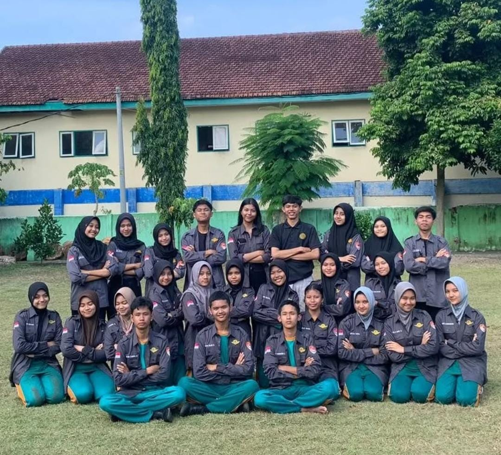

ANGGOTA GDS ANGKATAN 6
GDS ESEMKASA
Sejarah
Visi&Misi
Galeri Dokumentasi
Latian Rutin
Latian Gabungan
Latian Upacara
Pembiasaan Pagi
Struktur Organisasi
Ke Anggotaan
GDS Angkatan 5
GDS Angkatan 6
GDS Angkatan 7
GDS Angkatan 8
Daftar Sekarang
